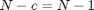
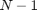
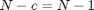
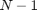
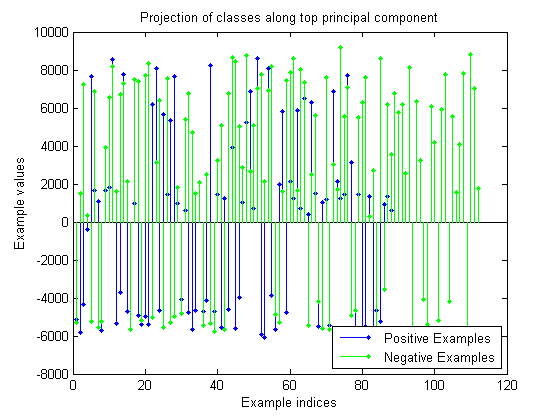
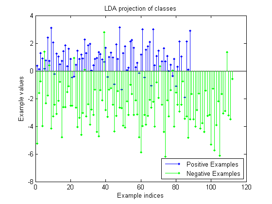

Implementation of first assignment for CMSC828J
Theme: LDA and its application in binary classification.
We use a subset of the "Arcene" dataset (http://archive.ics.uci.edu/ml/datasets/Arcene) to compare the effect of PCA and LDA on projecting the data on a one-dimensional linear subspace, as well as measure the effect of LDA on binary classification through an SVM. Arcene contains mass-spectrometric data from cancer patients as well as cancer-free subjects. The dataset was part of the NIPS 2003 feature selection challenge, so the test data's labels are withheld. We therefore concatenate the training and validation data (200 examples total, with 88 positives and 112 negatives) to experiment.
One interesting element of this dataset is that of the 10000 features selected by the owners, 3000 were "probes", i.e uninformative features. This features were randomly permuted with the informative spectrometric data features, and the owners provided no information about the feature selection process whatsoever. Therefore, good feature selection algorithms would have to be able to discern between the informative and uninformative features for the classification task, which makes dimensionality reduction techniques a very attractive candidate for solving this problem.
Contents
- Step 1: Read pre-processed data
- Step 2: Apply PCA to the data
- Step 3: Apply LDA to the projected data
- Step 4: Visually compare the LDA projection with the projection along the top principal component.
- Step 5 (final): Cross-validate a linear classifier on the original data and the LDA-projected data.
- Conclusions:
Step 1: Read pre-processed data
We have read all 200 examples and their corresponding labels into MATLAB variables, which we will now load into the workspace.
clc;
load concatData;
Step 2: Apply PCA to the data
As suggested by the "Fisherfaces" paper, in order to turn the "within class scatter" matrix  into a full rank matrix, the data needs to be reduced to  dimensions. We therefore apply PCA to reduce the dimensionality. We will use MATLAB's PCA implementation for this, which carries out multiple optimizations. For instance, the 'econ' flag that we'll be using carries out the optimization mentioned in the "Fisherfaces" paper, by discarding all eigenvectors whose eigenvalues are zero. This will help us keep only the first  eigenvectors, which is exactly what we want.
into a full rank matrix, the data needs to be reduced to  dimensions. We therefore apply PCA to reduce the dimensionality. We will use MATLAB's PCA implementation for this, which carries out multiple optimizations. For instance, the 'econ' flag that we'll be using carries out the optimization mentioned in the "Fisherfaces" paper, by discarding all eigenvectors whose eigenvalues are zero. This will help us keep only the first  eigenvectors, which is exactly what we want.
eigv = princomp(all_data, 'econ'); projected_data = eigv' * all_data'; projected_data = projected_data'; % Now data is N x (N -1)
Step 3: Apply LDA to the projected data
Now that the data has been compressed, we can call our LDA implementation without worrying about the "within class" scatter matrix. Refer to the function file LDA.m for details.
positive_examples = projected_data(all_labels>0, :); negative_examples = projected_data(all_labels <0, :); w = LDA(positive_examples, negative_examples);
Step 4: Visually compare the LDA projection with the projection along the top principal component.
princ_comp_proj = eigv(:, 1)' * all_data'; princ_comp_proj = princ_comp_proj'; pos_ex_princ_comp = princ_comp_proj(all_labels > 0, :); neg_ex_princ_comp = princ_comp_proj(all_labels < 0, :); % PCA projection maximizes variance, but isn't helpful for classification. stem(pos_ex_princ_comp,'DisplayName','Positive Examples',... 'Color', 'b',... 'Marker', '.'); figure(gcf); hold on; stem(neg_ex_princ_comp,'DisplayName','Negative Examples',... 'Color', 'g',... 'Marker', '.'); figure(gcf); legend('Positive Examples', 'Negative Examples',... 'Location', 'SouthEast'); title('Projection of classes along top principal component'); xlabel('Example indices'); ylabel('Example values'); hold off; % On the other hand, LDA projection promotes class separability. pos_ex_LDA_proj = positive_examples * w; neg_ex_LDA_proj = negative_examples * w; figure; stem(pos_ex_LDA_proj,'DisplayName','Positive Examples',... 'Color', 'b',... 'Marker', '.'); figure(gcf); hold on; stem(neg_ex_LDA_proj,'DisplayName','Negative Examples',... 'Color', 'g',... 'Marker', '.'); figure(gcf); legend('Positive Examples', 'Negative Examples',... 'Location', 'SouthEast'); title('LDA projection of classes'); xlabel('Example indices'); ylabel('Example values'); hold off; % It is not hard to see that LDA has separated the classes very well, % whereas PCA has naturally "mangled them up" together to preserve the % dataset's variance. 
Step 5 (final): Cross-validate a linear classifier on the original data and the LDA-projected data.
We will use MATLAB's SVM and cross-validation capabilities to estimate how well LDA might be suited with respect to linear classifiers.
% First we will need to concatenate the data with its labels, since this % serves the purposes of the functions we will use. full_data = [all_data, all_labels]; full_LDA_data = [projected_data*w, all_labels]; % Second, we will use the "crossval" function to run our SVM wrapper % (implemented in SVM.m) over 10 different folds of both the original data % and the LDA-projected data to obtain the relevant classification accuracies. % We also store the CPU time it takes for both cross-validations to run. start = cputime; orig_data_fold_accs = crossval(@SVM, full_data); orig_data_fold_time = cputime - start; start = cputime; proj_data_fold_accs = crossval(@SVM, full_LDA_data); proj_data_fold_time = cputime - start; fprintf('10-fold cross validation time on original Arcene data: %.4f seconds.\n', orig_data_fold_time); fprintf('Average accuracy: %.2f%%\n', 100.0*mean(orig_data_fold_accs)); fprintf('10-fold cross validation time on LDA-projected Arcene data: %.4f seconds.\n', proj_data_fold_time); fprintf('Average accuracy: %.2f%%\n', 100.0*mean(proj_data_fold_accs));
10-fold cross validation time on original Arcene data: 3.8532 seconds. Average accuracy: 88.50% 10-fold cross validation time on LDA-projected Arcene data: 0.2496 seconds. Average accuracy: 92.50%
Conclusions:
We have proven the intuition behind LDA pictorially by comparing its result with the projection along the top principal component. We also showed that LDA can be very beneficial for linear classifiers such as the SVM, by reducing the running time by orders of magnitude as well as benefit classification accuracy.